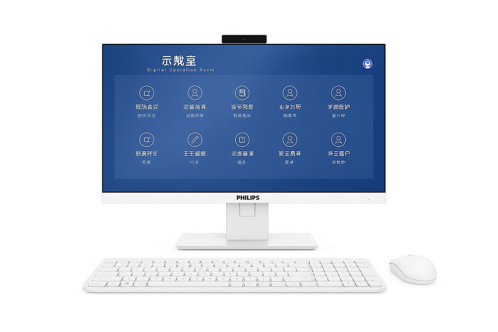

第一步 · 图像采集
4K超高清采集
通过多台高清摄像设备，全方位采集手术室内的图像信号，包括手术创口细节、手术室全景、医疗仪器画面等，确保手术过程完整记录。
4K医用术野摄像机
全景摄像机
医疗影像设备接入
多路信号同步采集


第二步 · 信号处理
编码传输
通过编码服务器对多路视音频信号进行数字化编码处理，转换为IP网络可传输的数字信号，实现高质量、低延迟的信号传输。
H.265高效编码
超低延迟传输
IP网络传输
多路信号同步

第三步 · 存储管理
中心控制
流媒体服务器与IP-SAN存储设备协同工作，实现手术全程录制、存储管理、权限控制，支持历史回放和按需点播功能。
流媒体服务器
IP-SAN存储
权限分级管理
历史回放点播

第四步 · 示教输出
多端显示
通过解码服务器将数字信号还原为高清视频，在大屏显示终端实时呈现，支持多路画面同屏显示、画中画等功能。
高清解码输出
多路画面同屏
画中画显示
大屏终端适配
